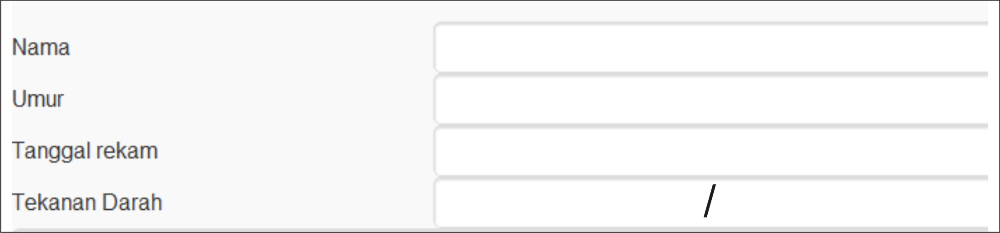

PANDUAN PENGGUNAAN
SISTEM PAKAR DIGNOSA PENYAKIT JANTUNG

Pada tab ini, berisi data pasien denganpetunjuk sebagai berikut :
Nama : Diisi dengan nama lengkap pasien
Umur : Diisi dengan umur pasien dengan format contoh = 25 Tahun
Tanggal Rekam : Tanggal sudah default hari ini, tetapi bisa dirubah dengan tanggal yang diinginkan
Tekanan Darah : Diisi dengan hasil pemeriksaan tekanan darah oleh para medis atau orang yang kompeten
Next to Home
Back
@2014 Design by Yusvian